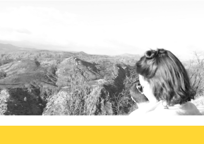

Experience
Software Product Designer
Practices Team | IBM Design
I design experiences and systems to promote and support the product teams, culture, and greater design iniative at IBM Design. Projects include: the IBM Design Thinking and IBM Design Language sites, amoung others.
Experience Designer
Marie Antoinette's Gluten Free Bakery
I am working with a team to update the brand and web experience. Includes: admin, vendor, and customer facing experiences.
Research Assistant
Carnegie Mellon University
Developed study protocol, testing, including think alouds and mental model sketching, to develop an interface that better communicates privacy and safety online.
Web Design Intern
American Eagle Outfitters
Updated and maintained creative on website and blog, including section images, fit and look guides, promos, and emails